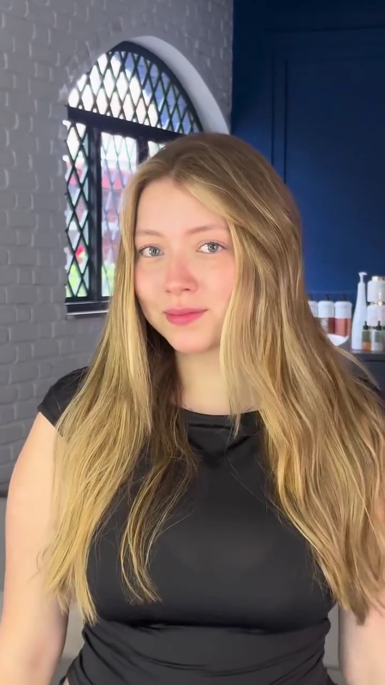
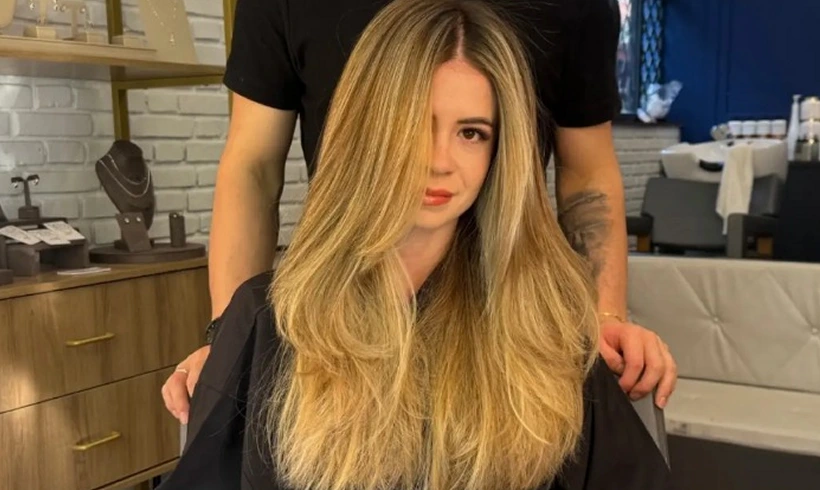
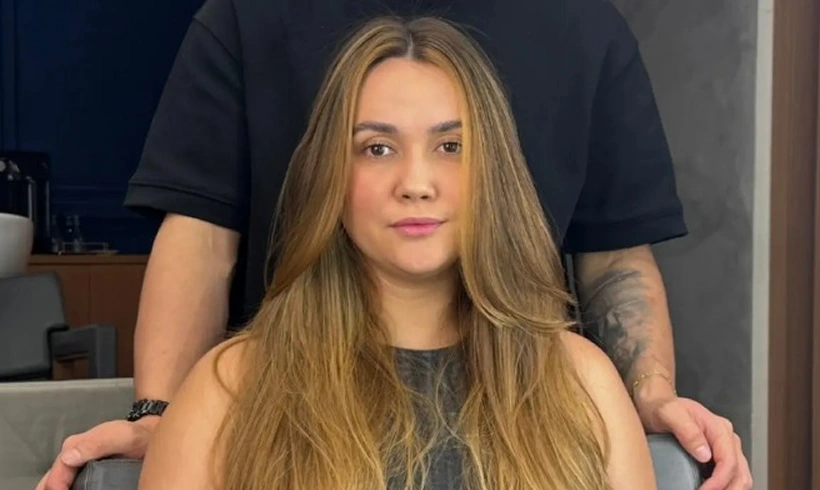
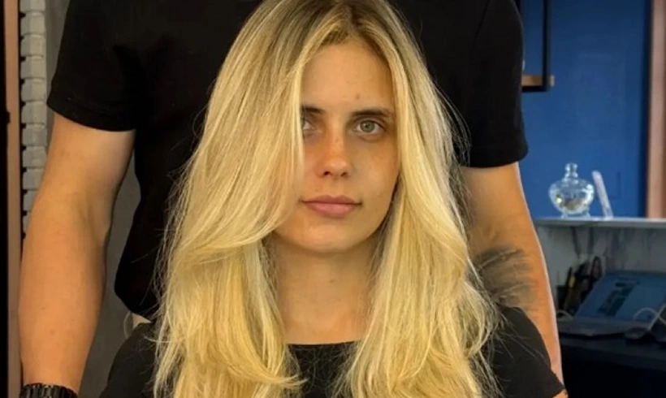
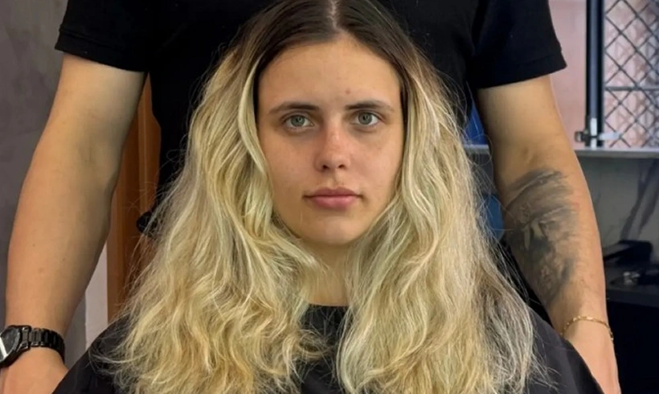
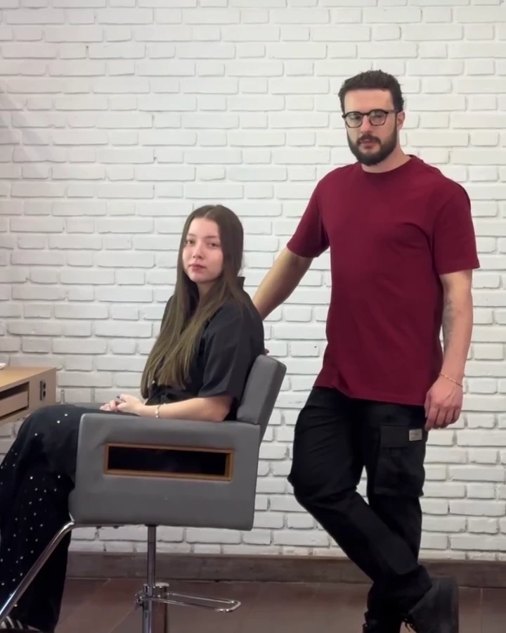
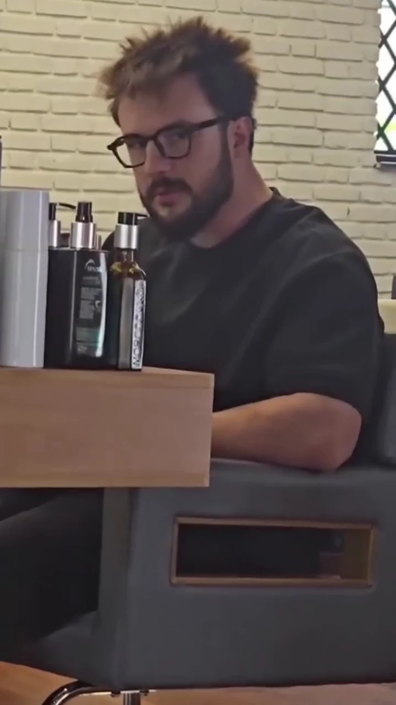

O endereço mais disputado do Jardim Esplanada. Na R. Pascoal Moreira, 247, o LU DIAS CONCEPT transforma você em sua melhor versão — unindo mechas personalizadas, harmonização de cores e saúde capilar em um studio acolhedor.
Mechas &
harmonização
Cada tom é desenhado a partir do seu subtom de pele, contraste natural e desejo de imagem — com acabamento sedoso que cresce sem marcação e valoriza sua beleza real.
- trajetória
- +7 anos
- clientes avaliam
- 54 reviews

Lu Dias Concept
Loiros manteiga, mel dourado e morena iluminada desenhados sob medida para crescer com naturalidade.
Transformações reais, sem filtro e sem marcação.
Deslize o comparador para inspecionar o antes e o depois clicados sob a luz natural do studio. Cada caso respeita a saúde da fibra e o subtom da pele.

O método antes da primeira pincelada.
Diferentes tons podem valorizar sua beleza — desde que respeitem a harmonia das suas características naturais e o que você deseja comunicar.
-
Escuta & Desejo de Imagem
Mapeamos sua rotina, histórico químico e a intenção estética que você quer expressar: sofisticação natural, luminosidade solar ou contraste marcante.
-
Leitura de Contraste & Fibra
Analisamos harmonia entre pele, olhos e cabelo junto ao diagnóstico de resistência da fibra, definindo o tom e a proteção exatos antes da química.
-
Execução Artesanal & Brilho
Aplicação personalizada com protocolos TRUSS Professional e Moroccanoil integrados durante o processo para devolver maciez, leveza e cor viva por meses.


Da engenharia química à arte de iluminar pessoas.
Em 2016, Lu Dias se preparava para cursar Engenharia Química — até escolher transformar sua paixão pela ciência e beleza dos cabelos em vocação.
A jornada começou do zero, atendendo em um pequeno espaço nos fundos da casa dos pais. Ao longo de mais de sete anos de especializações em tricologia, colorimetria avançada e harmonização de cores com grandes referências nacionais, nasceu o Lu Dias Concept: um studio aconchegante no coração do Jardim Esplanada.
- Experiência
- +7 anos
- 4,9 ★
- Studio
- Jd. Esplanada
Quem senta na cadeira sente a diferença.
“Adorei o trabalho feito no meu cabelo, ficou exatamente como eu havia pedido.”
“Excelente atendimento, lugar aconchegante, os profissionais são ótimos!”
Reserve seu momento no Jardim Esplanada.
Atendimento com hora marcada em um ambiente tranquilo, elegante e acolhedor em São José dos Campos.
-
Endereço R. Pascoal Moreira, 247 — Jardim Esplanada, São José dos Campos — SP, 12242-670
-
Horário Atendimento com hora marcada · Fecha às 18h
-
WhatsApp & Telefone (12) 98203-0344